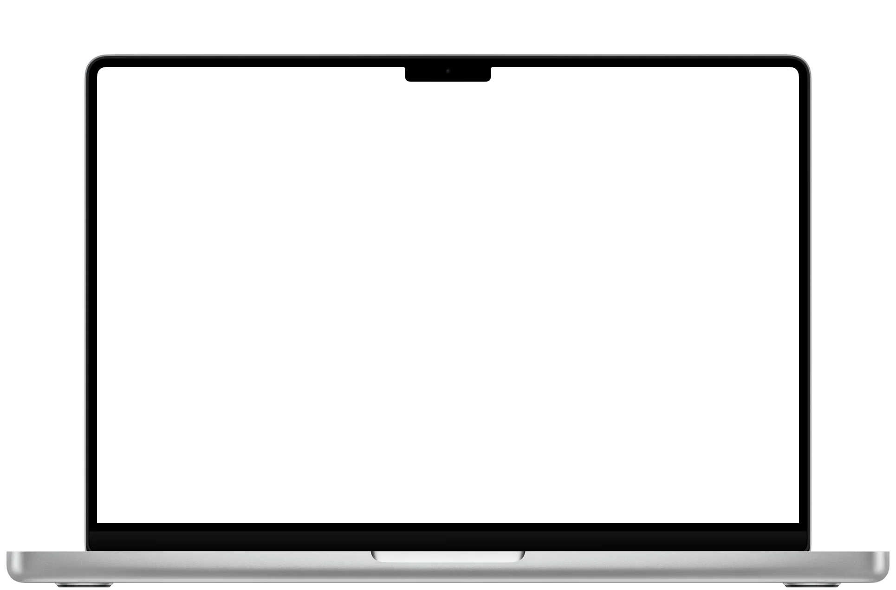

⚠ Yana muốn dùng run_command
rm -rf ./dist ./.cache

Vuốt lên hoặc cuộn xuống để mở nắp máy, vuốt xuống để gập lại

Mở nắp máy, rồi duyệt một lệnh như trong ứng dụng
⚠ Yana muốn dùng run_command
rm -rf ./dist ./.cache

Vuốt lên hoặc cuộn xuống để mở nắp máy, vuốt xuống để gập lại